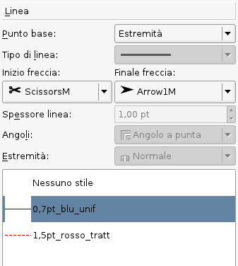
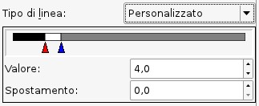
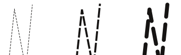
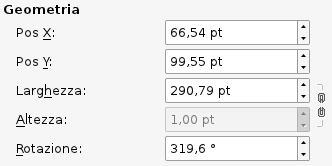
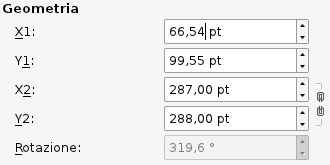
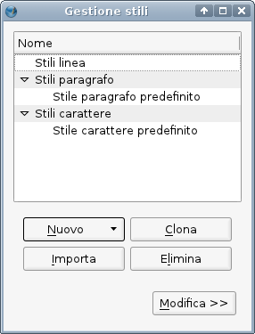
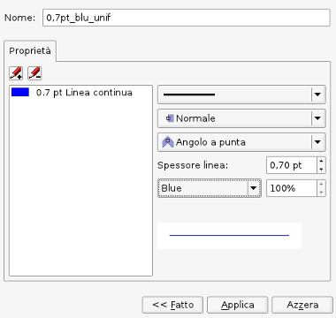

Lavorare con le linee e gli stili di linea
Proprietà: Linee
|  |
Qui, nella scheda Linea del pannello Proprietà, possiamo impostare gli attributi dei diversi tipi di linea usati in Scribus, che comprendono:
- linee rette (che, più esattamente, sono segmenti)
- curve di Bézier
- linee a mano libera
- bordi di forme e poligoni
- bordi di cornici di ogni tipo (a questi deve essere dato un colore perché le loro caratteristiche siano visibili).
Nel descrivere le opzioni della scheda Linea seguiremo un ordine diverso da quello in cui si trovano nella scheda stessa, poiché in questo modo la spiegazione dovrebbe essere più chiara.
La parte inferiore dell'immagine qui mostrata è diversa dall'aspetto predefinito della scheda, poiché oltre alla voce Nessuno stile che è sempre presente, abbiamo creato alcuni stili di linea che possono essere usati più volte all'interno del documento. Gli stili di linea saranno descritti alla fine di questa pagina.
|
Angoli ed estremità
 |
Questa schermata mostra le opzioni per gli angoli e per le estremità delle linee.
Da sinistra a destra:
- angolo a punta ed estremità normale
- angolo smussato ed estremità squadrata
- angolo arrotondato ed estremità arrotondata
Poiché si può scegliere uno qualunque dei tipi di angolo e uno qualunque dei tipi di estremità, vi sono in tutto nove possibili combinazioni. |
Tipo e spessore della linea
| Il menù a discesa per il tipo di linea offre una vasta scelta; qui ne mostriamo solo una parte. Oltre alle numerose scelte predeterminate, l'ultima voce, personalizzato, apre la finestra di dialogo mostrata più sotto.
|
 |
| Potete spostare i punti lungo il cursore scorrevole con il mouse o usare le caselle di controllo per regolare la loro posizione. Se avete usato le sfumature nella scheda Colore, l'uso del cursore dovrebbe esservi familiare. Come per le sfumature, potete non solo regolare i punti di transizione, ma anche aggiungerne altri facendo clic nello spazio al di sotto del cursore: vedrete comparire un + vicino al cursore del mouse. Il triangolo rosso indica il punto a cui si applicano i valori nelle caselle di controllo. Potete eliminare un punto facendo clic su di esso e trascinandolo verso il basso (ma ne devono restare almeno due). Come vedete, le caselle di controllo non hanno unità di misura: i valori sono relativi allo spessore della linea. Lo spostamento cambia la posizione del motivo lungo la linea, e ciò aiuta a impedire che uno spazio si trovi all'inizio o su un angolo.
|
 |
|  |
L'impostazione Spessore linea non dovrebbe aver bisogno di spiegazioni, ma qui a sinistra vediamo gli effetti del cambiamento di spessore sulla lunghezza e la spaziatura dello stesso motivo a trattini, usando valori di spessore di Ultrasottile, 1.0 pt, e 2.0 pt rispettivamente. Le impostazioni per angoli ed estremità sono le stesse degli esempi precedenti, quindi potete vedere che, specialmente con angoli ed estremità arrotondate, hanno effetto anche sui singoli trattini del motivo.
|
Inizio freccia e finale freccia
 |
Come per il tipo di linea, anche per Inizio freccia e Finale freccia è disponibile un gran numero di scelte, che potete scoprire da soli. Poiché queste terminazioni si applicano solo alle estremità opposte di una linea, possono essere usate soltanto con una linea o una figura aperta, e quindi questi pulsanti sono disattivati quando si lavora su forme, poligoni e bordi di cornice. La figura mostrata qui sotto era inizialmente una forma, ma è stata modificata per spezzare e aprire il triangolo, in modo da aggiungere le frecce; ovviamente, certe “frecce” non sono affatto tali. |
|  |
Punto base
Abbiamo lasciato quest'impostazione per ultima perché è un po' complicata. Per ogni tipo di linea o figura, le impostazioni iniziali nella scheda X,Y,Z del pannello Proprietà mostrano la Pos X e la Pos Y del punto base, che all'inizio è l'angolo superiore sinistro della cornice o del riquadro di delimitazione. Nel caso di una linea retta, Pos X e Pos Y indicano il punto iniziale da cui la linea è stata tracciata. Le altre caselle di controllo nella scheda X,Y,Z mostrano la Larghezza e l'Altezza del riquadro di delimitazione, tranne che per una linea retta, che è definita soltanto da Larghezza (cioè lunghezza), direzione (Rotazione) e spessore della linea.
Questo è valido se il Punto base nella scheda Linea è impostato a Punto sinistro. Se impostate il punto base a Estremità la scheda X,Y,Z mostra caselle di controllo per X1, Y1, e X2, Y2.
Per una linea retta X1 e Y1 indicano il punto iniziale della linea, cioè il punto a partire dal quale essa è stata disegnata; X2 e Y2 indicano le coordinate dell'altro estremo della linea.
L'esempio mostrato sotto riguarda una linea retta, e potete vedere che X-Pos = X1 e Y-Pos = Y1.
Per un oggetto più complesso di una linea retta, i valori sono riferiti al riquadro di delimitazione, e in questo caso X1 e Y1 indicano il punto base impostato nella scheda X,Y,Z; i valori X2 e Y2 indicano la larghezza e l'altezza del riquadro di delimitazione, che quindi saranno sempre numeri positivi.
| Punto base: punto sinistro
 |
Punto base: estremità
 |
Stili di linea
|  |
Dopo aver descritto i diversi attributi delle linee, possiamo spiegare gli stili di linea.
La pagina Lavorare con gli stili spiega come creare stili per l'aspetto del testo. È mostrata qui la finestra di dialogo Gestione stili già vista in quella pagina. Se premiamo il pulsante Nuovo, scegliamo Stile linea nel menù a discesa ed espandiamo la finestra, vediamo la sezione in cui gli stili di linea possono essere creati e modificati. |
|  |
Immediatamente sotto la scritta Proprietà ci sono due pulsanti, uno per aggiungere uno stile (così non è necessario tornare indietro per premere Nuovo un'altra volta), e l'altro per eliminare lo stile evidenziato. Le opzioni disponibili qui sono meno numerose di quelle nella scheda Linea del pannello Proprietà. In Tipo di linea non c'è l'opzione Personalizzato. Non ci sono impostazioni per le frecce, che quindi devono essere applicate in seguito se lo si desidera.
Ma in più ci sono le opzioni per il colore e l'ombreggiatura della linea, che nel pannello Proprietà si trovano nella scheda Colori.
|